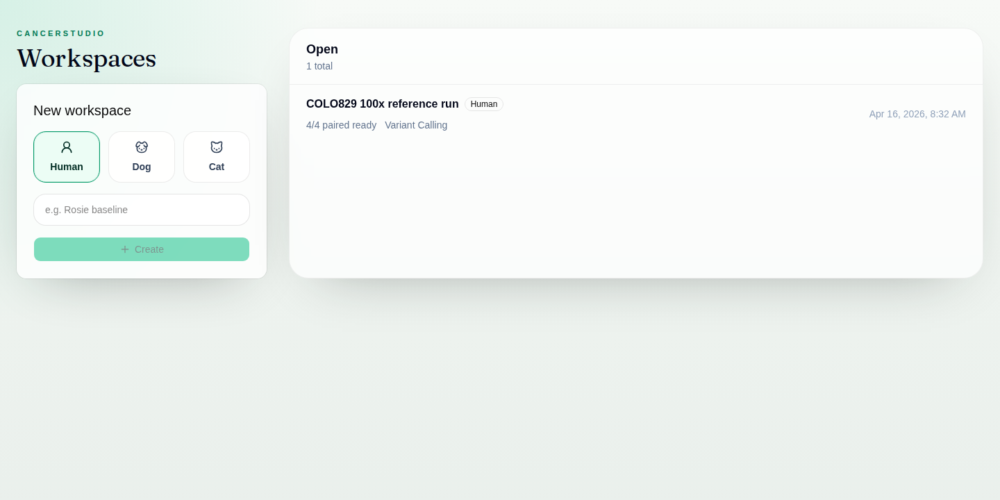
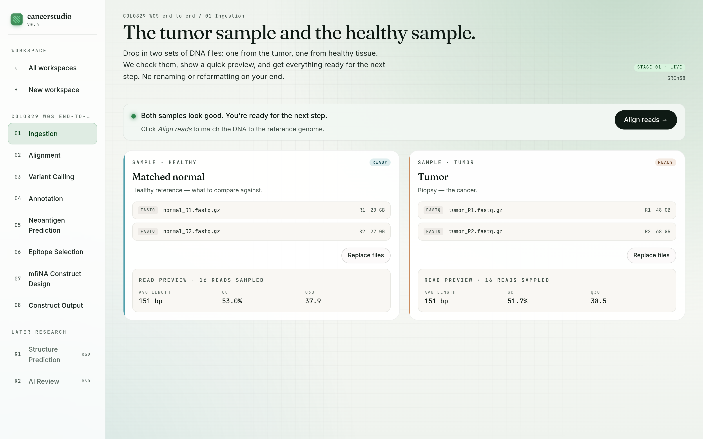
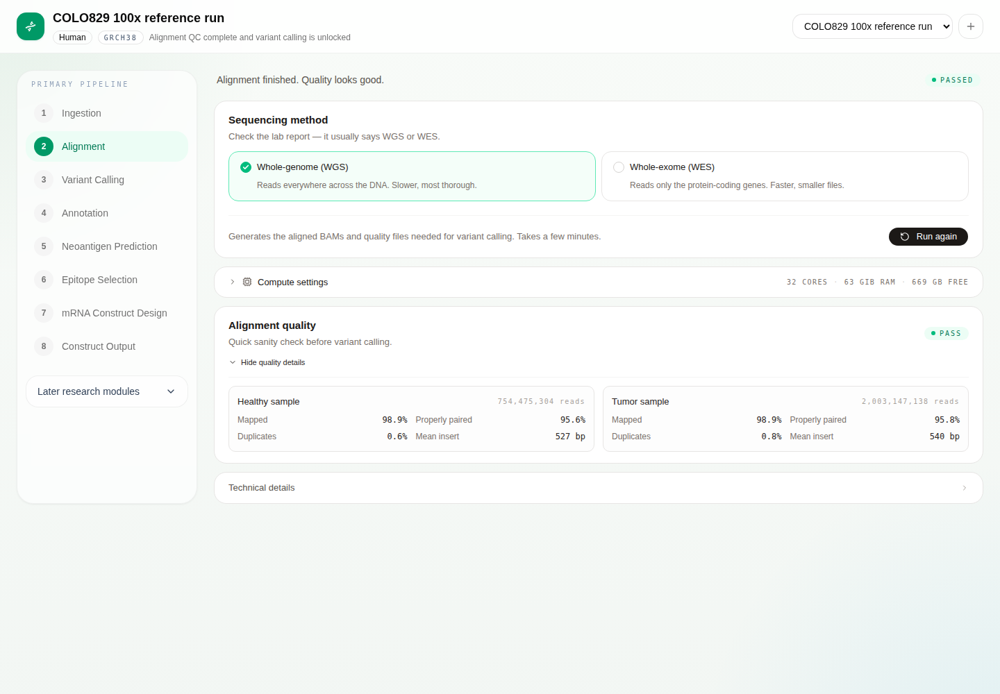

Start
Pick a species. Name your workspace.
Every case is a workspace. Human, dog, or cat — cancerstudio loads the right reference genome and locks the pipeline to that species for the rest of the run.

Ingest
Tumor and matched normal. Paired-end or nothing.
Two lanes: the tumor biopsy and a matched normal reference. cancerstudio reads the files in place, validates that both lanes are paired-end, previews a few reads, and normalizes everything into canonical FASTQ before alignment unlocks.

Align
Chunked strobealign that survives 100× WGS on 62 GB.
Pick whole-genome or whole-exome and hit start. Paired FASTQ is split into ~20M-read chunks and aligned in parallel with fresh strobealign workers, so memory never accumulates across a multi-hour run. A watcher thread enqueues chunks as they land, so aligners start within a minute of split instead of waiting for the full pass. Compute knobs (chunk size, parallelism, aligner threads, sort memory) are exposed inline with a live RAM-footprint estimator.
Multi-hour runs need multi-hour UX: blended progress bar with per-phase sub-bars, rolling ETA, heartbeat and stall detection, and a live tail of the commands actually running. Need your machine back? Hit Stop & keep progress and every aligned chunk stays on disk — Resume picks up from the next un-aligned chunk instead of starting over. Cancel & discard is there too when you want a clean slate.

Call variants
Mutect2 on the paired BAMs.
Variant calling unlocks as soon as alignment lands a QC-pass verdict. The panel, API routes, and orchestration stub are wired end-to-end today; the Mutect2 scatter/gather body is the next step. Output will be a somatic VCF plus Mutect2 stats, ready for annotation.

The pipeline
Eight stages from raw reads to vaccine.
Ingestion and alignment are live today. Variant calling is scaffolded end-to-end and actively being implemented. The rest of the stages are wired into the UI and will light up as they're built.
-
1
IngestionLive
Pick local FASTQ, BAM, or CRAM. Normalize into canonical paired FASTQ.
-
2
AlignmentLive
Chunked strobealign against GRCh38, CanFam4, or felCat9. Stop-and-resume at chunk granularity. Verified on COLO829 100× WGS.
-
3
Variant callingScaffolded
Somatic mutations from tumor vs normal BAMs with GATK Mutect2. Panel + routes scaffolded; orchestration in progress.
-
4
AnnotationPlanned
Functional consequences via Ensembl VEP.
-
5
Neoantigen predictionPlanned
MHC binding for mutant peptides with pVACseq + NetMHCpan.
-
6
Epitope selectionPlanned
Rank and pick the best targets.
-
7
mRNA construct designPlanned
Codon optimization, UTRs, and secondary structure.
-
8
Construct outputPlanned
Annotated mRNA sequence ready for synthesis.
Stays on your laptop
Desktop-first, by design.
Electron shell, local Next.js renderer, local FastAPI engine, SQLite on disk. No cloud services, no Docker, no object storage. Your sequencing data never leaves the machine.